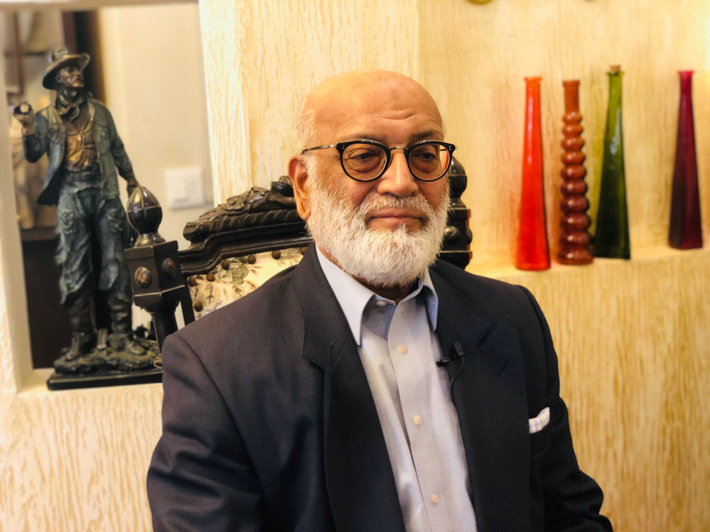
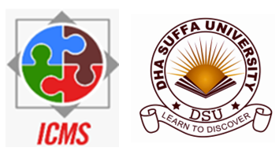
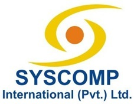
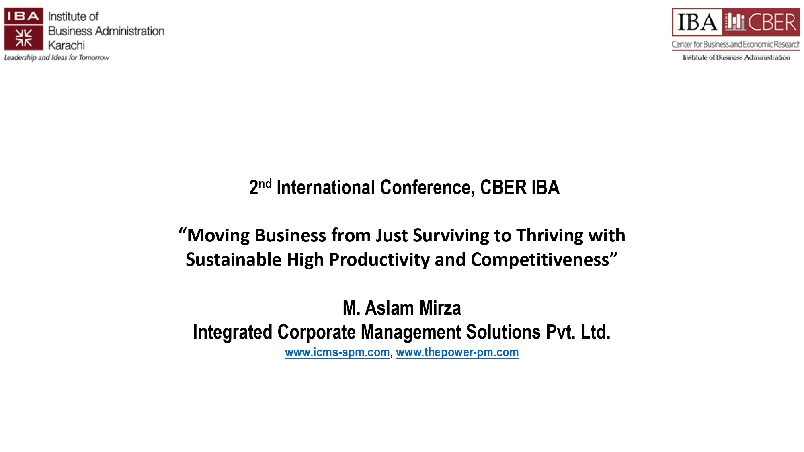
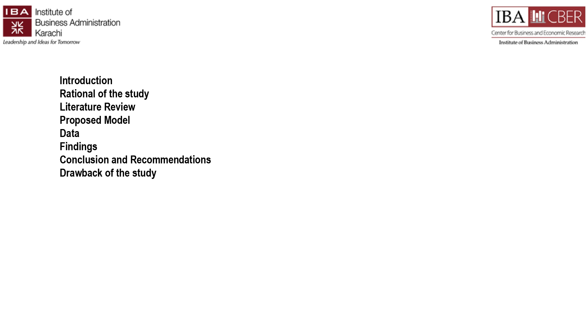
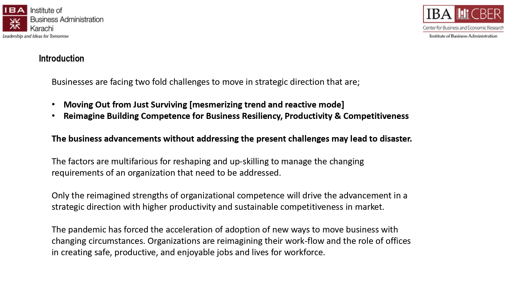

The project management approach helps implementation of
business strategy and advancement in strategic direction.
THE POWER OF PROJECT MANAGEMENT
The framework helps results-driven management, focus on
customer need and expectation, and managing agile-networking.
THE POWER OF PROJECT MANAGEMENT
Framework helps humanizing the workplaces through art of
possibilities, solution for issues, decision making, actions
and initiatives.
THE POWER OF PROJECT MANAGEMENT
Helps Talent Management, focus on performance, managing
accountability and responsibilities at every level.
Approach The Experts
M. Aslam Mirza
| CEngr, MBA, LMG, PMP
Practitioner of Strategic Project Management
He is practitioner of “Strategic project management” having
the realization that projects are initiated to achieve
business results and organizational project management
approach should be better aligned with the higher-level
enterprise strategy.
Organizational Project Management [OPM] helps linking
portfolio, program and project management principles and
practices and organizational enablers like – structural,
cultural, technological and human resource practices
supporting the strategic advancement. It is globally
recognized a 21st Century Management Concept for advancing
in strategic direction with high performance, high
productivity, and sustainable growth.
His areas of support are noted following;
a) Cultural design and managing a good fit for teams to
achieve high performance and productivity at workplace.
b) Strategic advancement with setting up portfolio for a
business goal comprising programs, projects and controlling
through PMO.
c) Transformational endeavors of managing gaps in strategy
and implementation.
d) Enjoy coaching and mentoring the leaders for high
performance.
×

M. Aslam Mirza
| CEngr, MBA, LMG, PMP
He has a unique mix of exposure to wealth of
knowledge, hands-on making things happen and working
with diversified global team. He worked with world
class body-Project Management Institute, US, for
advancement of Project Management professional
knowledge and Global Standards. His captured insights
have brought him the strengths to deal with business
challenges and finding the best solutions for high
performance and high productivity.
His specialty enumerated as following; • Strategy
Management: Diagnostic assessments and analysis of
situation help managing the mega trends taking place
in business and industry and find the feasible
advancement of business in time of 5/10/15 yrs.
• Strategy Implementation: Identification of gaps,
team building, managing collaborative leadership and
building competence of organization for strategic
advancement.
• Strategic Sustainability: Building systems for
culture of self-improvements, human factors and
workplace environment for high performance & continued
success.
• Construction Project Management: Hands-on exposure
to construction management
Speaker, presenter, writer and trainer. He captured
insights for Strategic Advancement1.
2. Presentations at Symposiums-PMI, US & online at
www.projectmanagement.com
3. 50+ Webinars & peer-reviewed articles published at
www.projectmanagement.com
4. Corporate trainer for building competence to move
in strategic direction.
For detailed professional exposure, visit the
following;
With over 50 years on projects, in various industries and
global locations, he offers perspectives, new mindsets, and
wisdom to overcome hurdles in your project, and business
needs like:
1. Establishing a PMO? Find out what benefits you want
the PMO to deliver. 2. Understanding how to save a
troubled project? Do a healthcheck and get recommendations
within a week. 3. Finding more options to solve a
problem? Invest in divergent thinking, get out of
dichotomies. 4. Developing a purpose, strategy and
make it happen? Be coached on how to engage your employees
to become champions of your business transformation.
5. Looking at the human side of projects, business and
other networks? 6. Understanding how to influence
culture and behaviours, how to establish trust and increase
collaboration and performance. 7. Becoming more
resilient and wiser? Get mentored to reflect on your
strength and to develop your 10 features of wisdom.
×
Thomas Walenta
| PgMP, PMP, PMI Fellow
He worked on projects and programs from 1974 and
selected Project Management as his sole career
profession in 1988.
Currently, he is a Coach and Mentor for Project
Management Professionals and In- where he gained
experience with setting up complex programs, running
PMOs and turning around troubled projects for IBM
clients in diverse industries and geogra- phies. In
parallel to his work he acts as a project management
volunteer since 1998, as PMI Chapter President, PMI
Board Director and received the PMI Fellow award in
2012. He is a frequent speaker at global conferences
and published in several me- dia. In 2017, he received
a diploma qualification as a non-executive director
from IoD, UK, which complements his 6 years as
director on PMI’s global Board.
He has a background of more than 46 years of working
on projects, 34 years leading projects and 19 years in
charge of programs. He initiated and ran PMOs,
programs and projects for customers of IBM in system
integration, software, out- sourcing and strategy. He
delivered turnkey projects, rolled out SAP to European
country organizations, engaged and delivered large
outsourcing contracts and integrated the full
portfolio of IBM solutions in a key account role.
Recently, he supported a German manufacturer to
establish organization wide portfolio management and
setup of a hybrid PMO, serving agile and traditional
projects.
His cultural experience gained is from government,
insurance, banking, electronics and automotive
industries as well geographically from most European
countries, Russia, Japan, India and US. He visited
about 100 countries.
What do you find so entertaining?
What's so amusing about this?
What do you take life for, exactly?
Why can't you understand?
How can you forget?
"Collaboration for Executive Training Programs"

"Competence Building of Businesses and Industries to Move in a
Strategic Direction"
"Collaboration for Executive Training Programs"

"Partner for Training on PMI - Global Certifications"
1 / 3

First Slide
2 / 3

Second Slide
3 / 3

Third Slide
Vision
Business success is achieved with Project management skills and
certifications that are pursued through talent management and
competence building of an organization for advancement in strategic
direction and sustainable growth under perpetual disruption.
Mission
Promotion of awareness of the strengths of project management
concepts for adaptation by professionals, business and industry for
making way forward in disrupting business environment.